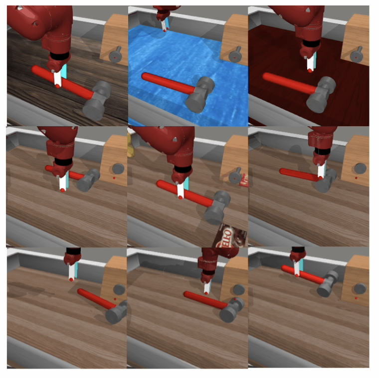

|
Jubayer Ibn Hamid
I am a researcher at Stanford Artificial Intelligence Laboratory (SAIL) where I am advised by Chelsea Finn in IRIS Lab. I am currently pursuing a B.S in Mathematical Physics and a coterminal M.S in Computer Science at Stanford University.
My research interests are in the intersection of machine learning, offline reinforcement learning, representation learning and foundation models.
Previously, I did research in physics. Outside of machine learning, I am quite interested in various fields of mathematics like abstract algebra, algebraic and differential topology/geometry.
Email /
Twitter /
Github
|
|
|
Research
(*) denotes equal contribution
|
|
|
Tripod: Three Complementary Inductive Biases for Disentangled Representation Learning
Kyle Hsu*,
Jubayer Ibn Hamid*,
Kaylee Burns,
Chelsea Finn,
Jiajun Wu.
Ongoing project.
We endow autoencoders with three inductive biases for disentanglement - latent quantization, latent multiinformation regularization (using kernel density approximation), and
a scale-invariant, normalized Hessian (off-diagonal) penalty. Our resulting model achieves state-of-the-art results on disentanglement benchmarks.
|
|

|
What Makes Pre-trained Visual Representations Successful
For Robust Manipulation?
Kaylee Burns,
Zach Witzel,
Jubayer Ibn Hamid,
Tianhe Yu,
Chelsea Finn,
Karol Hausman
Paper /
Website
We find that visual representations designed for manipulation and control tasks do not necessarily generalize under subtle changes in lighting and scene texture or the introduction of distractor objects. To understand what properties do lead to robust representations, we compare the performance of 15 pre-trained vision models under different visual appearances. We find that emergent segmentation ability is a strong predictor of out-of-distribution generalization among ViT models. The rank order induced by this metric is more predictive than metrics that have previously guided generalization research within computer vision and machine learning, such as downstream ImageNet accuracy, in-domain accuracy, or shape-bias as evaluated by cue-conflict performance.
|
|
Notes
I am sharing notes on various topics that have fascinated me. These are not meant to be in-depth. Rather, they are meant to cover some of the basic constructions that show up periodically and are also interesting in and of themselves.
Real and Complex Projective Space. These spaces that one can find in any introduction to topology/geometry is very fascinating. For example, one can show that any connected, compact surface is homeomorphic to either a genus or a connected sum of real projective spaces. I also think it is surprising to the human intuition that they are manifolds.
Policy Gradient Methods. These notes cover mostly the basic building blocks (including the policy gradient theorems for both episodic and continuing tasks) of the most basic policy gradient algorithms without any focus on implementation whatsoever.
|
|
{kind=link}